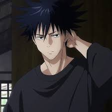

|

Megumi is proficient in hand-to-hand combat, defaulting to weaponry and Cursed Techniques in battle. His primary ability is the Ten Shadows Technique, inherited from the Zenin family, allowing him to summon friendly Cursed Spirits that will fight against anything considered a threat. |